Datos Ingresados
| Variable |
Valor ingresado |
| Información general de la vía |
- Descripción zona: {{datos.carretera}}
- Tipo de sector: {{datos.tipo}}
- Estado de la superficie: {{datos.estado}}
- Tipo de infraestructura {{datos.infraestructura}}
|
| Características de la infraestructura peatonal |
- Pendiente longitudinal {{datos.pendiente}} %
- Ancho efectivo {{datos.ancho}} m
- Voluemn peatonal {{datos.vol_peatonal}} pea/hora/vía
- Distribución por sentido {{datos.d_sentido}} %
- Factor de hora pico (FHP): {{datos.fhp}}
|
| Características de los usuarios |
- Porcentaje de hombres: {{datos.p_hombres}} %
- Porcentaje de niños: {{datos.p_ninos}} %
- Porcentaje de jovenes: {{datos.p_jovenes}} %
- Porcentaje de adultos: {{datos.p_adultos}} %
- Porcentaje de adultos mayores: {{datos.p_mayores}} %
- Personas con paquete: {{datos.p_paquetes}} %
- Personas acompañadas: {{datos.p_acompanadas}} %
|
Resumen de resultados obtenidos
Cálculo de la capacidad de la infraestructrura peatonal
- Cb: Valor máximo de flujo bajo condiciones base
- Se obtuvo 3850 p/h/m a partir de datos locales de los modelos calibrados para
la ciudad de Tunja, Colombia.
- Factores de ajuste a la capacidad
-
Factor de ajuste por edad y genero (Feg) = {{datos.feg}}
Factor de ajuste por pendiente y estado de la vía (Fpe) = {{datos.fpe}}.
Factor de ajuste por distribución direccional (Fd) = {{datos.fd}}.
Factor de ajuste por acompañantes (Fac) = {{datos.fac}}.
- Cálculo de la Capacidad de la infraestructura peatonal
- {{datos.capacidad}} p/m/acera
Nivel de Servicio obtenido
- Velocidad a flujo libre en condiciones base para pendiente de {datos.pendiente}}%
- {{datos.vfl}} m/s
- Factores de ajuste para obtener la velocidad media de caminata
-
Factor de ajuste por utilización de la capacidad (Fu) = {{datos.fu}}
Factor de ajuste por el porte de objetos (Fo> = {{datos.fo}}
Factor de ajuste por el tipo de zona (Fz) = {{datos.fz}}
Factor de ajuste por ancho restringido (Far) = {{datos.far}}
- Velocidad media de caminata
- {{datos.vel_media}} m/s
- Espacio medio peatonal
- {{datos.espacio}} m2/p
- Nivel de servicio encontrado
- {{datos.nivel_de_s}}
Cálculo de Capacidad de la infraestructura peatonal
La capacidad de una infraestructura peatonal, se expresa en unidades de peatones
para un periodo determinado de tiempo (usualmente una hora) y por metro lineal de ancho de sección
transversal. Su estimación se propone en la ecuación 1.
Ecuación 1
Donde:
C = Capacidad de la infraestructura analizada, expresada en p/m/acera
Cb = Valor máximo de flujo bajo condiciones base; se obtuvo 3850
p/h/m a partir de datos locales de los modelos calibrados para la ciudad de Tunja Colombia.
Ae = Ancho efectivo utilizado por los peatones, expresado en m.
Feg = Factor de ajuste por edad y género.
Fpe = Factor de ajuste por pendiente y estado de la vía.
Fd = Factor de ajuste por distribución direccional.
Fd = Factor de ajuste por acompañantes.
Factor de ajuste por edad y género (Feg)
Se parte de la formulación de la ecuación 2 para cada género.
Ecuación 2
Donde, para cada genero se tiene
Pn = Proporción de niños (personas entre 3 y 10 años)
En = Equivalente de joven por niño (de la tabla 1)
pj = Proporción de jovenes (personas entre 11 y 25 años)
Ej = Equivalente de joven por joven (de la tabla 1)
pa = Proporción de adultos (personas entre 26 y 60 años)
Ea = Equivalente de joven por adulto (de la tabla 1)
pm = Proporción de adultos mayores (personas mayores de 60 años)
Ea = Equivalente de joven por adulto mayor (de la tabla 1)
Tabla 1. Equivalente en hombre joven por diferentes edades y géneros
| GÉNERO |
EDAD |
EQUIVALENTE |
| Masculino |
Niño
Joven
Adulto
Mayor |
1.21
1.00
1.12
1.224 |
| Femenino |
Niño
Joven
Adulto
Mayor |
1.29
1.061
1.197
1.317 |
De acuerdo a los valores ingresados, la aplicación de la ecuación 2 y el uso de la
tabla 1, se obtiene un factor de ajuste por edad y género, igual a:
Feg= {{datos.feg}}
Factor de ajuste por pendiente y estado de la acera (Fpe)
Este factor fue calibrado a partir de la relación entre la velocidad y la pendiente
longitudinal de la acera, en observaciones para personas jóvenes. Los resultados obtenidos se muestran en
la tabla 2.
De acuerdo a la pendiente de la vía igual a {{datos.pendiente}}%, en estado
{{datos.estado}} y el uso de la tabla 2, se obtiene un factor de ajuste por pendiente y estado de
la acera, igual a:
Fpe = {{datos.fpe}}
Tabla 2. Factor de ajuste por pendiente y estado de la vía
| PENDIENTE |
ESTADO |
|
Bueno |
Regular |
Malo |
| Suave <3%< /td>
| 1.0 |
0.965 |
0.931 |
| Media 3-7% |
0.929 |
0.894 |
0.859 |
| Alta > 7% |
0.857 |
0.823 |
0.788 |
Factor de ajuste por distribución direccional (Fd)
Con base en observaciones de campo se encontró que el efecto de la distribución
direccional en la capacidad de la acera se refleja en la tabla 3.
Para una distribución direccional de {{datos.d_sentido}}/{{100-datos.d_sentido}} y
el uso de la tabla 3, se obtiene que el factor de distribución direccional es:
Fd = {{datos.fd}}
Tabla 3. Factor de ajuste por distribución direccional
| Distribución direccional |
Factor de ajuste por
distribución
direccional(Fd) |
| 50/50 |
1.0 |
| 60/40 |
0.87 |
| 70/30 |
0.78 |
| 80/20 |
0.7 |
| 90/10 |
0.64 |
| 100/0 |
0.58 |
Factor de ajuste por acompañantes (Fac)
Caminar acompañado reduce la capacidad de la acera debido a que el comportamiento
del grupo de peatones se altera (principalmente respecto a la velocidad),
se evaluó el impacto del tamaño del grupo de peatones y se encontró que su efecto es similar a caminar con
un solo acompañante, así, se plantea el uso de la ecuación 3 para estimar este factor de ajuste.
Ecuación 3
Donde:
pa = proporción de peatones que caminan acompañados
Ea = Equivalente de acompañantes a condiciones base = 1.078.
Reemplanzando la proporción de peatones que caminan acompañados pa igual
a {{datos.p_acompanadas}}% en la ecuación 3, se obtiene un factor de ajuste por acompañantes igual a:
Fac = {{datos.fac}}
Cálculo final de la capacidad
Reemplazando los factores de ajuste hallados en los pasos anteriores en la ecuación
1, se obtiene que la capacidad de la infraestructura peatonal es igual a:
Capacidad = {{datos.capacidad}} pea/hora/m
Cálculo del Nivel de servicio
El nivel de servicio presente en un acera se calcula en función del espacio medio
peatonal. Para determinar este valor se requiere conocer el flujo peatonal y la velocidad media de
caminata que se estima a partir de la ecuación 4.
Ecuación 4.
Donde:
V = Velocidad media de caminata expresada en m/s.
Vfl = Velocidad a flujo libre en condiciones base, para la pendiente
especificada, expresada en m/s.
Fu = Factor de ajuste por utilización de la capacidad.
Fo = Factor de ajuste por el porte de objetos.
Fz = Factor de ajuste por el tipo de zona.
Far = Factor de ajuste por ancho restringido.
Velocidad a flujo libre (Vfl)
La velocidad a flujo libre en condiciones base fue tabulado a partir de
observaciones para distintos valores de pendiente longitudinal de las aceras entre 0 y 17%. Los valores se
muestran en la tabla 4.
La velocidad a flujo libre para una infraestructura peatonal con pendiente de
{{datos.pendiente}} %, según la tabla 4, es igual a:
Tabla 4. Velocidad a flujo libre en condiciones base
| PENDIENTE |
% |
Vfl (m/s) |
| SUAVE |
0 - 2.9% |
1.45 |
| MEDIA |
3% - 6.9% |
1.32 |
| ALTA |
>= 7% |
1.2 |
Factor de ajuste por utilización de la capacidad (Fu)
De las condiciones locales se obtuvo la función parabólica que representa la
relación velocidad vs flujo, se definieron tramos de la función para obtener el factor que se muestra en
la tabla 5.
Tabla 5. Factor de ajuste por utilización de la capacidad
| V/C |
0.05 |
0.1 |
0.2 |
0.3 |
0.4 |
0.5 |
0.6 |
0.7 |
0.8 |
0.9 |
0.95 |
1.0 |
| FV/C
| 1.0 |
0.99 |
0.98 |
0.95 |
0.92 |
0.87 |
0.82 |
0.75 |
0.68 |
0.59 |
0.55 |
0.50 |
La relación V/C, teniendo un volumen peatonal de {{datos.vol_peatonal}}
pea/hora/m y una capacidad determinada previamente de {{datos.capacidad}} pea/hora/m, es igual a:
Con el valor anterior, y el uso de la tabla 5, se estima que el factor de ajuste
por utilización de la capacidad es igual a:
Factor de ajuste por el porte objetos (Fo)
Se comparó la velocidad hombre joven caminado sin objetos y con objetos en
diferentes niveles de pendiente longitudinal, dicha relación definió el factor de ajuste mediante el uso
de la ecuación 5 y la tabla 6. Se considera que un objeto es un elemento que se lleva en la mano y
dificulta la movilidad al reducirla velocidad de caminata (por ejemplo coche de bebé, equipaje o bolsas).
En el caso de estudiantes no se consideró como objeto el porte de morral puesto que se lleva en la espalda
o el hombro.
Ecuación 5
Donde:
po = Proporción de peatones con objetos
Eo = Equivalente de peatones con objetos, de la tabla 6.
Tabla 6. Factores de equivalencia para peatones con objetos
| Pendiente |
Eo |
| Suave |
<3%< /td>
| 1.045 |
| Media |
3% - 7% |
1.286 |
| Alta |
>7% |
1.543 |
Con la proporción de peatones con objetos igual a {{datos.p_paquetes}}%, pendiente
longitudinal de {{datos.pendiente}}% y el uso de la ecuación y tabla 6, se estima el factor de ajuste por
por el porte de objetos, igual a:
Factor de ajuste por el tipo de zona (Fz)
Se relaciona la velocidad de hombres jóvenes en zona centro con la de otros tipos
de sectores como se muestra en la tabla 7.
Para el sector {{datos.tipo}}, el factor de ajuste por sector urbano es
igual a:
Tabla 7. Factor de ajuste por sector urbano.
| Sector |
Factor |
| Centro |
1.0 |
| Educativo |
1.266 |
| Transporte |
1.139 |
| Otros |
1.063 |
Factor de ajuste por ancho restringido (Far)
Este factor considera una penalización adicional causada opr un ancho efectivo muy
pequeño, que incluso para flujos peatonales bajos resulta molesto para los usuarios, este factor resultó
de gran utilidad para reflejar la percepción de los peatones y se muestra en la tabla 8.
El factor de ajuste por ancho restringido para la infraestructura peatonal con
ancho efectivo de {{datos.ancho}} m, según la tabla 8 es:
Tabla 8. Factor de ajuste por ancho restringido
| Ancho efectivo (m) |
Factor |
Ancho efectivo (m) |
Factor |
| >= 2.1 |
1.000 |
1.2 |
0.741 |
| 2.0 |
0.987 |
1.1 |
0.683 |
| 1.9 |
0.978 |
1.0 |
0.619 |
| 1.8 |
0.962 |
0.9 |
0.550 |
| 1.7 |
0.940 |
0.8 |
0.474 |
| 1.6 |
0.912 |
0.7 |
0.392 |
| 1.5 |
0.879 |
0.6 |
0.304 |
| 1.4 |
0.839 |
0.5 |
0.210 |
| 1.3 |
0.793 |
<= 0.4
|
0.110 |
Velocidad media de caminata
Luego de estimar la velocidad a flujo libre en condiciones base y los factoes de
ajuste, mediante el uso de la ecuación 4, se determina la velocidad media de caminata igual a:
Espacio medio peatonal
Una vez estimada la velocidad media de caminata, se determina el espacio medio
peatonal mediante la relación entre velocidad media y flujo que se muestra en la ecuación 6.
Ecuación 6
Reemplazando los valores previamente obtenidos en la ecuación 6, se obtien que el espacio medio peatonal
es igual a:
Donde:
E = Espacio medio peatonal expresado en m2,
V = Velocidad media de caminata expresada en m/s ({{datos.vel_media}} m/s),
FHP = Factor de hora pico considerando periodos de 15 minutos ({{datos.fhp}}),
Q = Volumen peatonal horario, expresado en p/h/m. ({{datos.vol_peatonal}} p/h/m.)
Nivel de servicio obtenido.
La calidad del servicio se determina mediante la escala de niveles de servicio,
para este fin, con base en las observaciones y el modelo calibrado se definió la escala que se muestra en
la tabla 9.
Mediante el uso de la tabla 9, y un espacio medio calculado de {{datos.espacio}}
m2/p,
se determina que el Nivel de Servicio que presenta la infraestructura peatonal es de
{{datos.nivel_de_s}}.
Tabla 9. Escala de niveles de servicio propuesta.
| Nivel de Servicio |
Espacio medio (m2/p) |
Tasa de flujo (p/h/m) |
Velocidad media (m/s) |
Relación v/c |
| A |
>5.3 |
<= 810 |
>1.20 |
<= 0.21 |
| B |
>3.5 - 5.3 |
>810 - 1200 |
>1.17 - 1.20 |
>0.21 - 0.31 |
| C |
>2.4 - 3.5 |
>1200 - 1700 |
>1.12 - 1.17 |
>0.31 - 0.44 |
| D |
>1.5 - 2.4 |
>1700 - 2500 |
>1.05 - 1.12 |
>0.44 - 0.65 |
| E |
>0.65 - 1.5 |
>2500 - 3850 |
>0.70 - 1.05 |
>0.65 - 1.00 |
| F |
<= 0.65>
|
Variable |
<0.70< /td>
| Variable |
Análisis de sensibilidad
Efectos producidos por variaciones en el volumen peatonal
Gráfica 1. Variación de la capacidad de la infraestructura peatonal
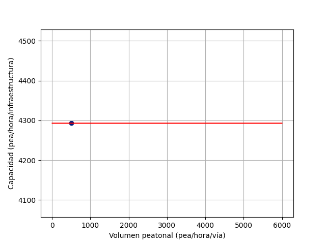
Gráfica 2. Variación del nivel de servicio
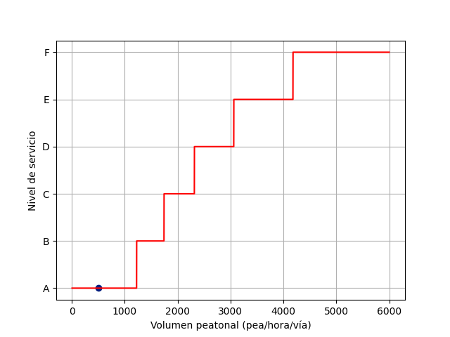
Gráfica 3. Variación del espacio medio peatonal
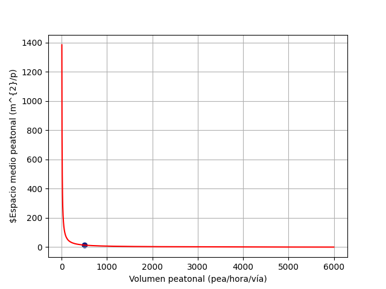
Gráfica 4. Variación de la velocidad media de caminata
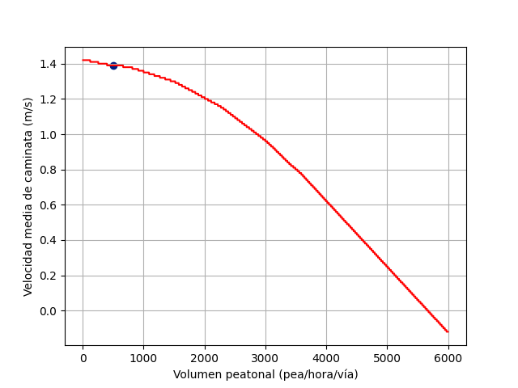
Efectos producidos por variaciones en la pendiente longitudinal
Gráfica 5. Variación de la capacidad de la infraestructura peatonal
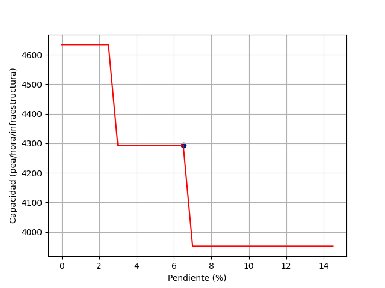
Gráfica 6. Variación del Nivel de servicio
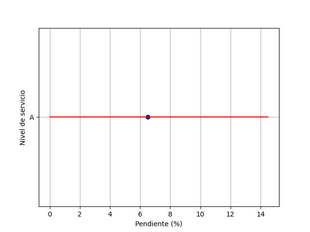
Gráfica 7. Variación del espacio medio peatonal
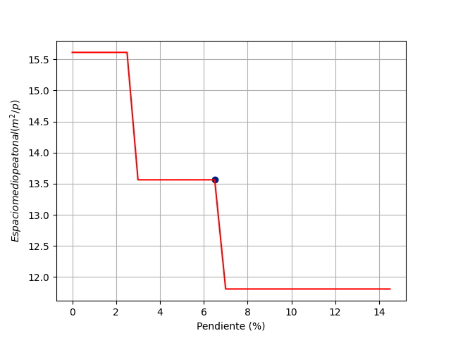
Gráfica 8. Variación de la velocidad media de caminata
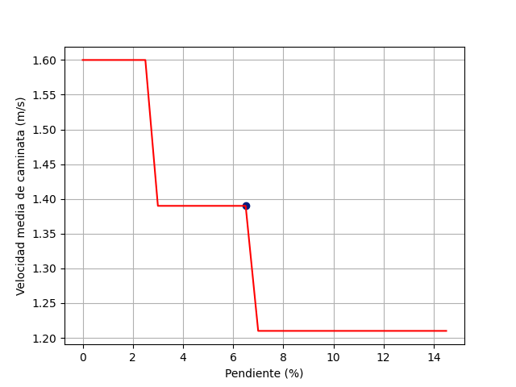
Efectos producidos por variaciones en el ancho efectivo
Gráfica 9. Variación de la capacidad de la infraestructura peatonal
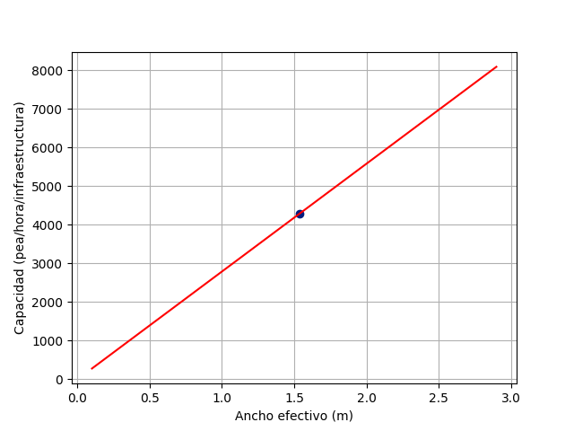
Gráfica 10. Variación del Nivel de servicio
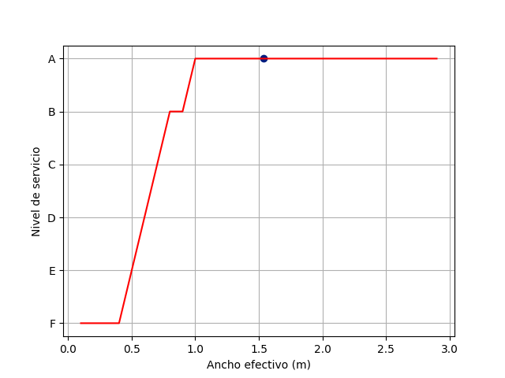
Gráfica 11. Variación del espacio medio peatonal
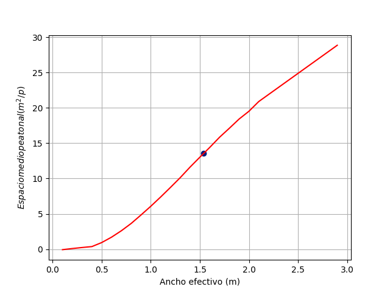
Gráfica 12. Variación de la velocidad media de caminata
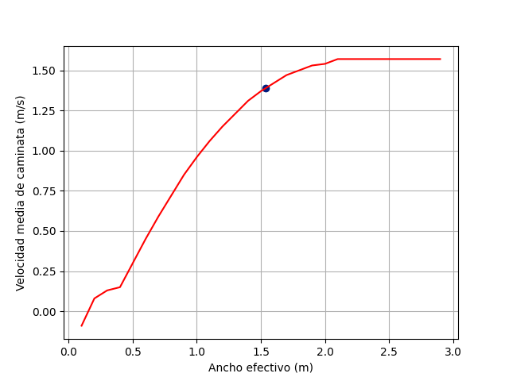
Efectos producidos por variaciones en el estado de la superficie de la
infraestructura peatonal.
Gráfica 13. Variación de la capacidad de la infraestructura peatonal

Gráfica 14. Variación del Nivel de servicio
Efectos producidos por variaciones en el tipo de sector de la infraestructura
peatonal.
Gráfica 15. Variación de la capacidad de la infraestructura peatonal
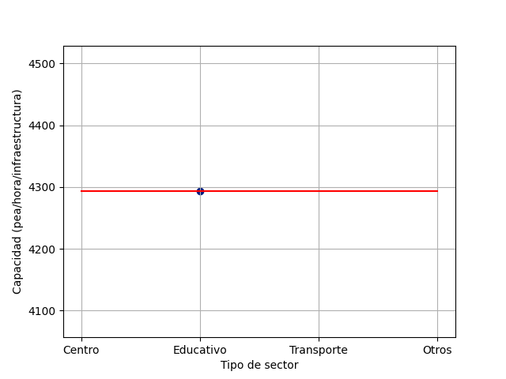
Gráfica 16. Variación del Nivel de servicio
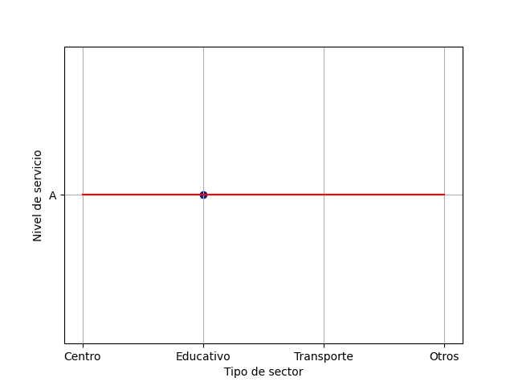
Efectos producidos por variaciones en el sentido de circulación.
Gráfica 17. Variación de la capacidad de la infraestructura peatonal
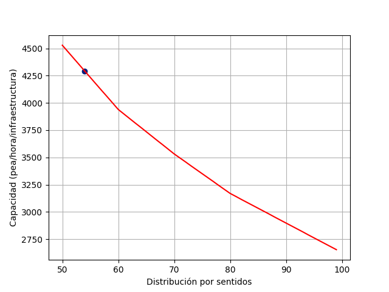
Gráfica 18. Variación del Nivel de servicio
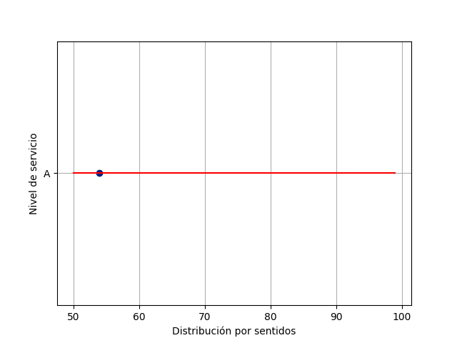
Efectos producidos por variaciones en el porcentaje de hombres que cirulan por la
infraestructura peatonal.
Gráfica 19. Variación de la capacidad de la infraestructura peatonal
Gráfica 20. Variación del Nivel de servicio
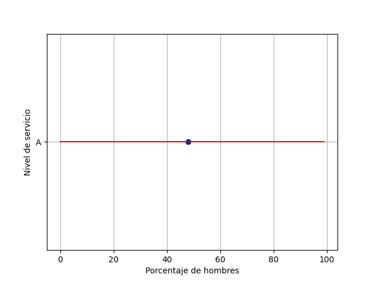
Efectos producidos por variaciones en porcentaje de personas que se desplazan
acompañadas.
Gráfica 21. Variación de la capacidad de la infraestructura peatonal

Gráfica 22. Variación del Nivel de servicio
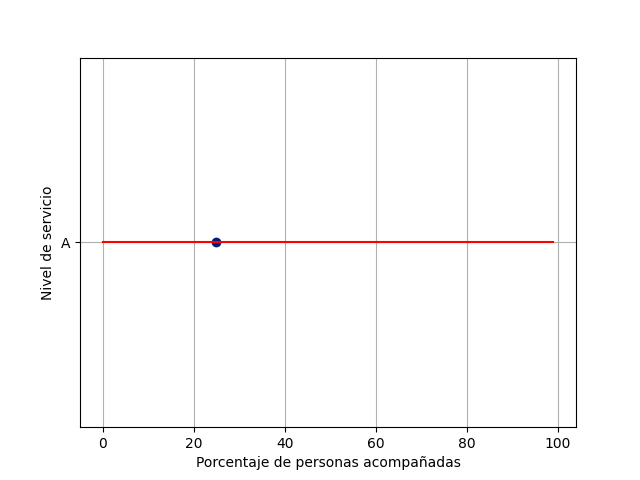
Efectos producidos por variaciones en el porcentaje de personas que se desplazan
con paquetes.
Gráfica 23. Variación de la capacidad de la infraestructura peatonal
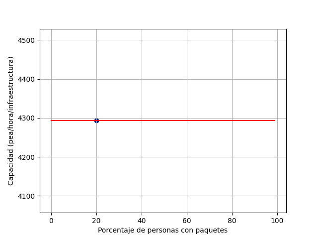
Gráfica 24. Variación del Nivel de servicio
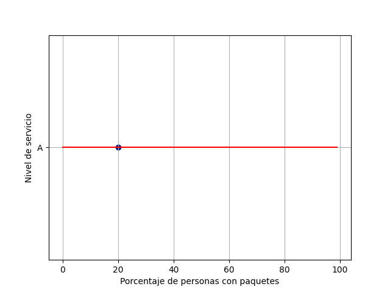
{% include "footer.html" %}